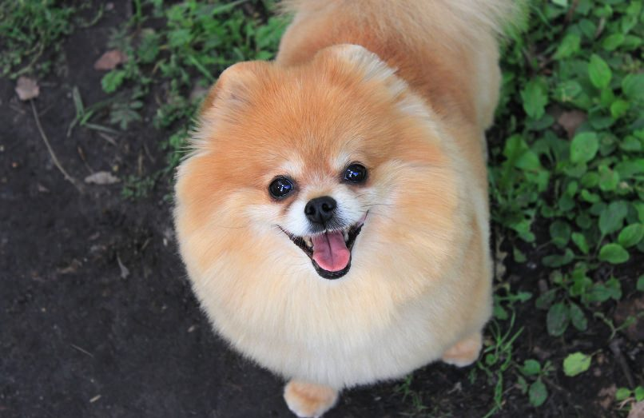

Pomeranians are small dogs that originated in areas such as Germany and Poland. They are one of the oldest and most popular breeds of dogs in the United States. They have an abundant textured coat with a highly plumed tail and a foxy face with alert, prick ears
They come in the widest variety of colors of any dog breed. They are often at mature size by seven to 10 months of age and weigh between one and three kilograms. Queen Victoria adopted a small red Pomeranian in 1888, which influenced the breed's popularity and color.
SUPER CUTE!
read more on
wikipedia
